Super Store Finder
Easy to use Google Maps API Store Finder
- Created: 12/14/2012
- latest Update: 12/14/2012
- By: Joe Iz
- Email: shihtzupyramid@gmail.com
-
* Updated 29 Jan 2015 : You can now Install Super Store Finder in 2 Easy Step.
You may refer to the video guide here: http://www.youtube.com/watch?v=V3Kte43-HtM
Super Store Finder is a fully featured PHP Application integrated with Google Maps API v3 that allows customers to locate your stores easily. Packed with Geo IP technology, your customers will be able to view a list of nearby stores / outlets around them sorted by distance. Setup is really easy and quick while deploying the store finder to any website gets even easier when you can embed it to any web page or CMS (Joomla/Wordpress/Drupal/etc) by simply copy and paste the embed code. The responsive user interface works on various platform such as PC, laptops, smart phones and other mobile devices.
Important Note: Super Store Finder now comes with two separate folders, if you wish to use the non-responsive version kindly extract superstorefinder.zip. In the other hand if you wish to use the responsive version which supports mobile devices, please extract superstorefinder_responsive.zip.
Setting up the Database
Create a MySQL database via your hosting or dedicated server control panel.
Then, create a database by entering database name, username and password and give specific permission and privilege to access the database.
Remeber the database information below which is needed to run the Installer in the next step.
Running the Installer
Firstly, set the following files and folders to writable (chmod 666 or right click the file/folder and set permission to writable - recursively):
Files:
- /includes/config.inc.php
- /admin/includes/config.inc.php
- /temp_upload
- /admin/temp_upload/
- /admin/imgs
Enter the full url of where you have installed Super Store Finder (i.e http://yourwebsite.com/superstorefinder/). For fresh install, it will automatically points you to Installation page. Enter the database credentials to the Installation Step 1 as below.
If all goes well, you will see Database schema successfully created message. Now, enter the administrator's password, email, default language and default unit distance and click Complete Installation.
You are done! You can now visit your store finder or manage your stores via Administrator Area.
Administrator's Area
To view to the Administrator's Area visit the '/admin' . You will be required to login using the password you've chosen during Installation.
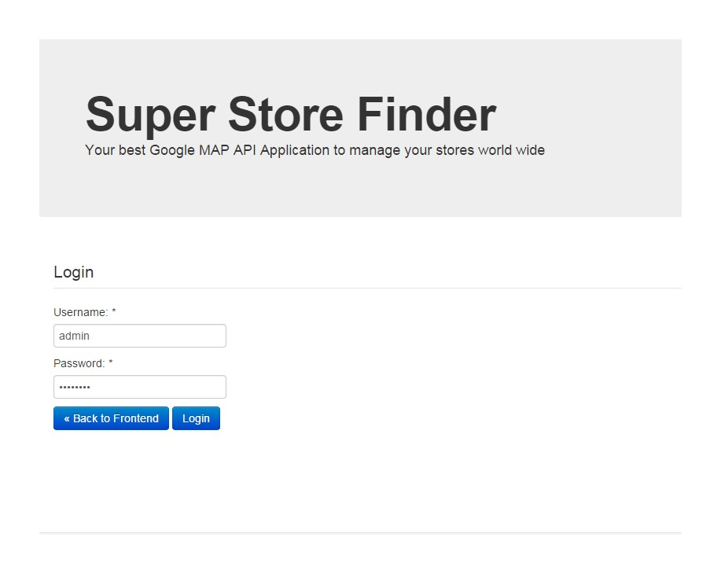
Managing Multiple Admin Users
You can have multiple admin users to manage your stores using the administrator area. Features such as Add/Edit/Delete admin users and change their password are available. To add a new admin user, login to administrator's area and click on 'Add Admin User' from the navigation bar. To view / edit / delete admin users, click on 'Admin User List'.
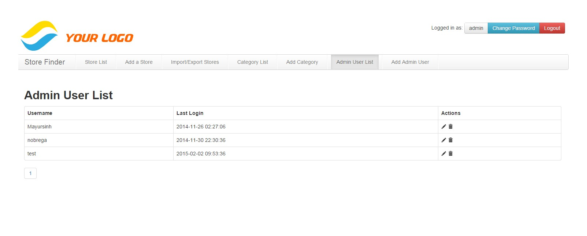
Managing Stores
Viewing Store List
This will display all your store list from the database. You can add more store by clicking Store List link at the top navigation. To edit or delete a specific Store use the edit icon for each store.
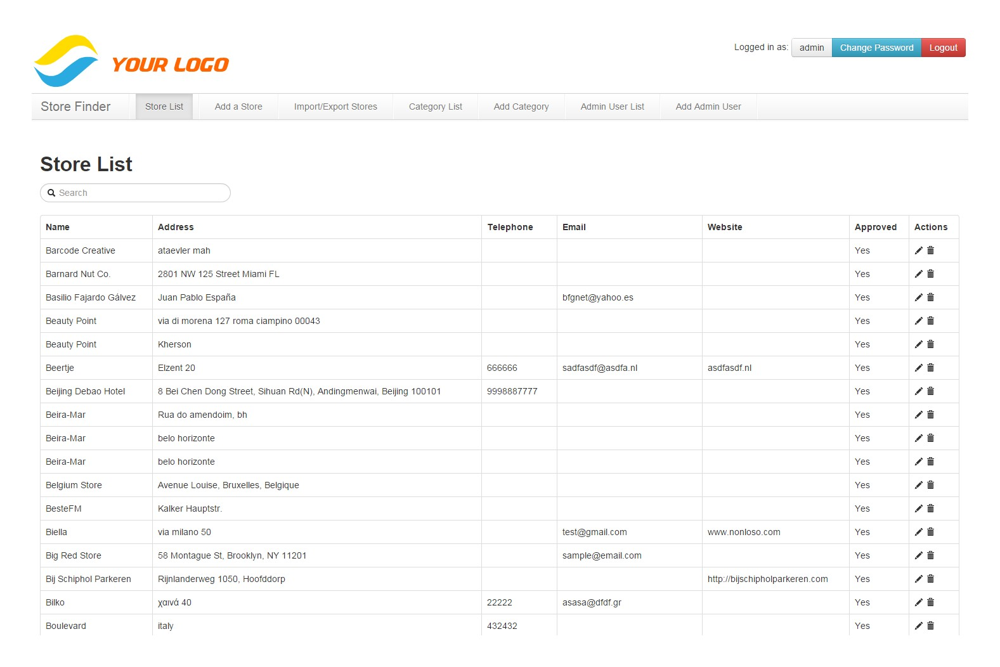
Adding a Store
To add a Store click the Add Store link from the main navigation. Here you can enter Store Name, Store Address, Upload picture, etc. Longitude and Latitude values will be auto detected upon entering an address.
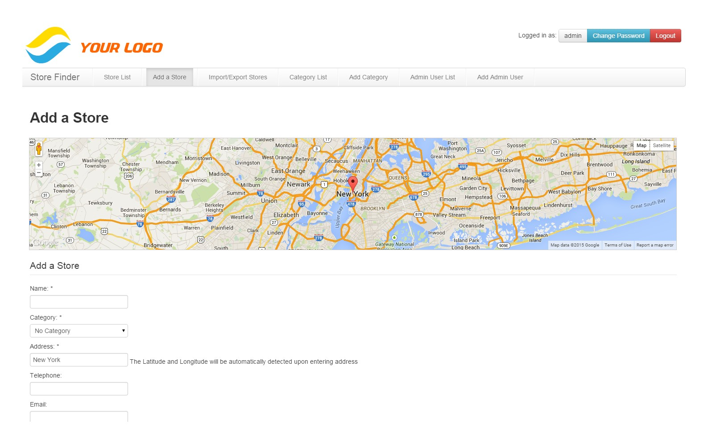
Additionally, you can import / geocode bulk stores via CSV (video guide here https://www.youtube.com/watch?v=R784bmcW0hw)
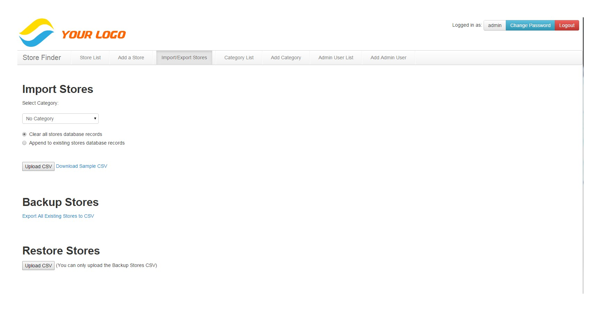
Editing a Store
Firstly navigate to Store List from the main navigation menu. To edit a Store click the Edit icon for a store. You can make changes here and save.
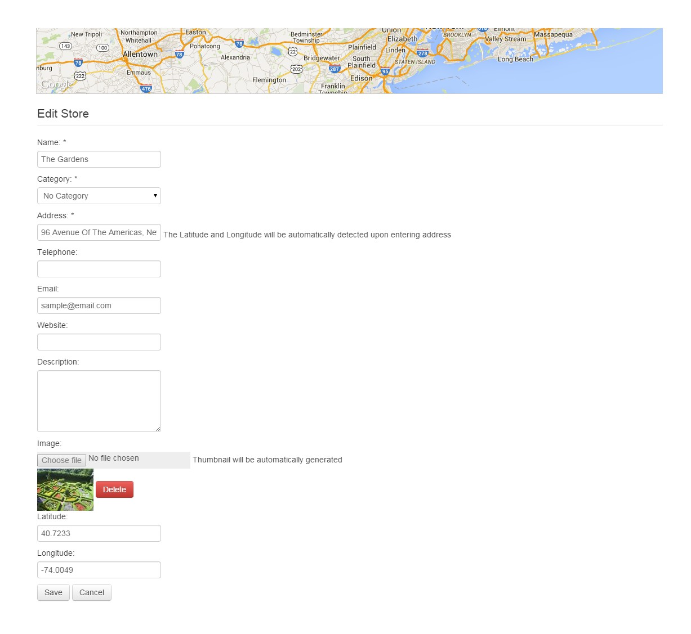
Deleting a Store
Firstly navigate to Store List from the main navigation menu. To delete a Store click the Delete icon for a particular store. You will be prompted with a confirmation.
Approving a Store
Firstly navigate to Store List from the main navigation menu. Stores that have added by users from frontend by default will be having status of 'Not Approved', this means that they must be approved by an admin user before it's visible at frontend. Administrators can approve a store add request by clicking the Approve link from the Action column.
Configuring Settings
At the admin area, click on the cog icon at the top right of the page.
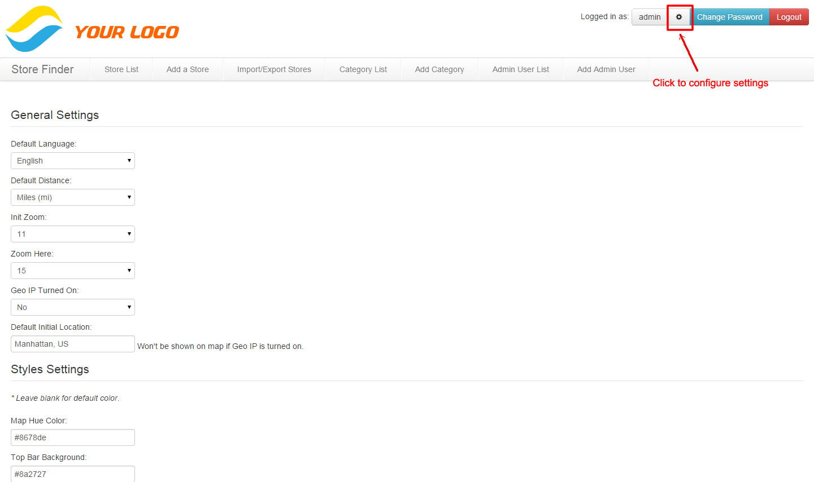
You can set the default language, distance, initial zoom, zoom here, geo ip settings and default initial location as screenshot below.
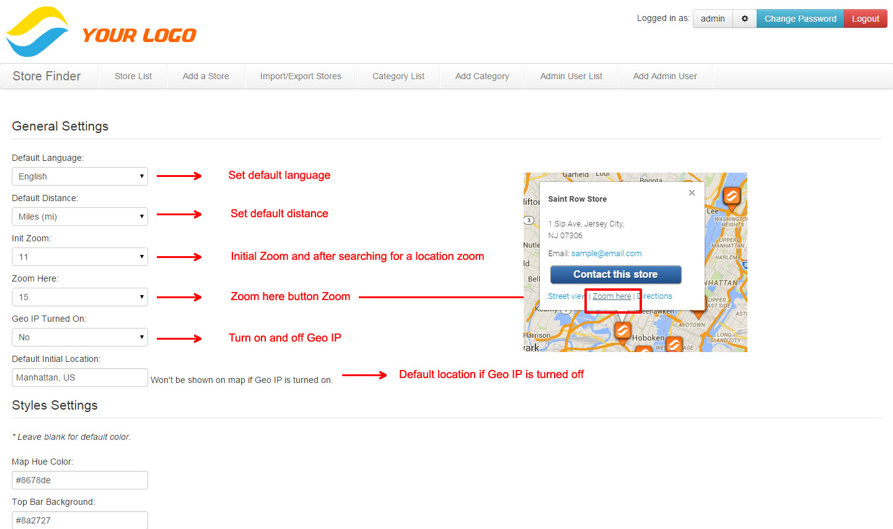
You can set the styling of the map, refer to below screenshot for reference.
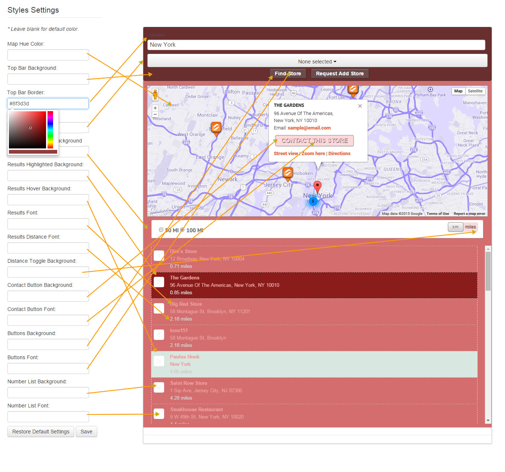
How to Disable Geo IP
This has been obsolete, patch 2.4 or later you can set it via config page at admin. You can refer to this guide here
If you wish to disable Geo IP, edit index.php and search for:
$('#address').val(geoip_city()+", "+geoip_country_name());
Edit it to your city and country, example:
$('#address').val("Sydney, Australia");
Next edit js/super-store-finder.js and change the following
// auto detect GEO ip, use script below
gmap_location_lookup(geoip_city()+', '+geoip_country_name(),'200','');
Modify it for example New York. Take note the 200 is the radius by mile of nearby stores you can modify that too.
//Hard coding default location
gmap_location_lookup('New York, NY','200','');
Embedding your Store Finder?
You can embed your store finder on any website using the embed code which can be found at index page. Refer screenshot below.
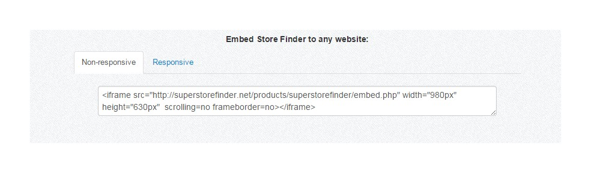
Using the Store Finder
Store Finder Frontend
If you have installed the store finder at http://yoursite.com/storefinder, navigate to that path to view the store finder frontend user interface.
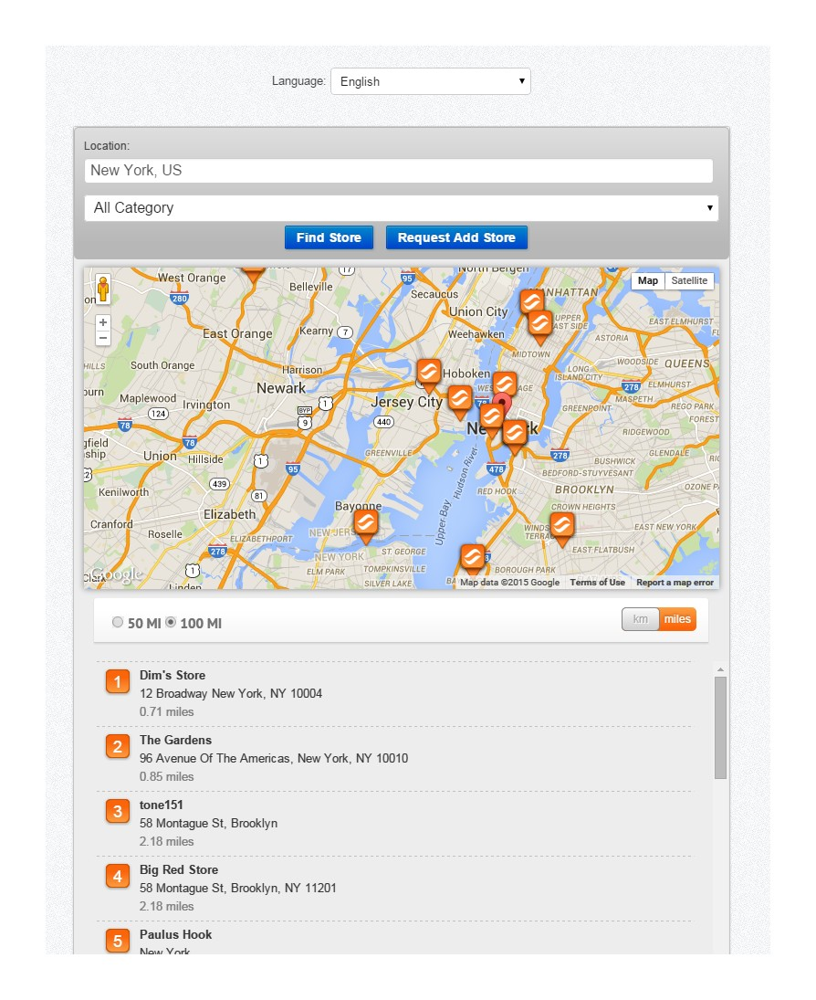
Using the Search
When you're searching for a location, the autofill feature will suggest a city name. Press Find Store button to proceed and nearby stores will be displayed on map as well as in the list from the right navigation.
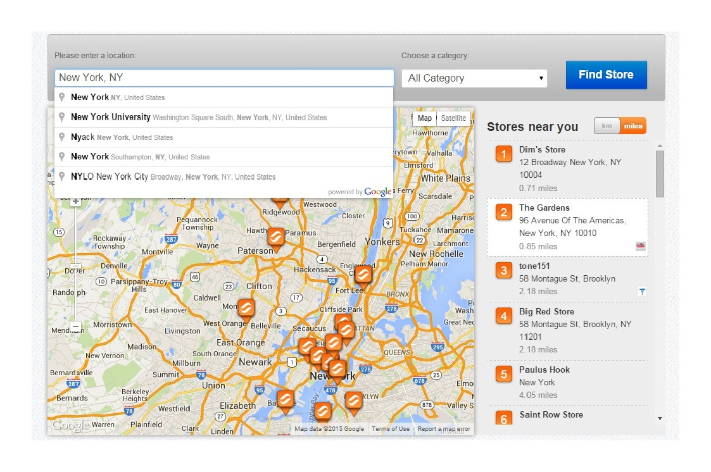
Contacting the Store
By clicking on a particular store, it will display the store information such as address, tel and website. If the store has email, a button Contact this Store will appear allowing you to contact the store outlet via email.
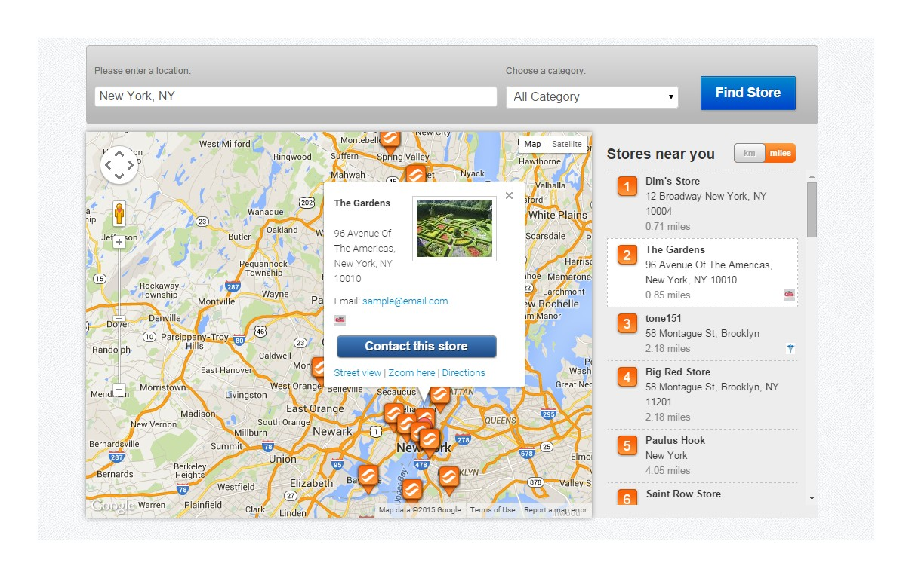
Request Add Store
Wish public users to help grow your store database, if you're opening a directory listing you can allow public users to click on Add Store link from the navigation menu. Once added, the store will require approval from an administrator before it will be published in the store finder.
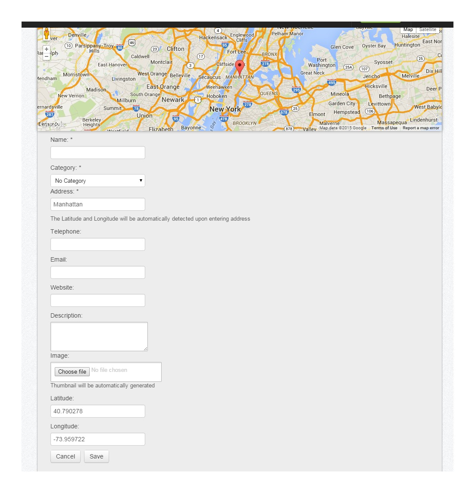
Support
We provide fast and reliable support, for inquiry, troubleshooting, customization and special requests, please send an email to Highwarden at http://codecanyon.net/user/highwarden
Be sure to follow us on Envato for new releases and future products here.
For knowledge base and forums you can visit the following links:


Or you can visit http://superstorefinder.net/support